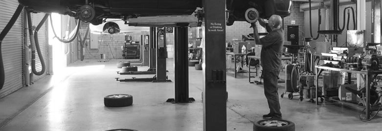

Shop Supplies
Keep your auto shop well-stocked
An automobile repair shop (also known regionally as a garage or a workshop) is an establishment where automobiles are repaired by auto mechanics and technicians.
An automobile repair shop (also known regionally as a garage or a workshop) is an establishment where automobiles are repaired by auto mechanics and technicians.